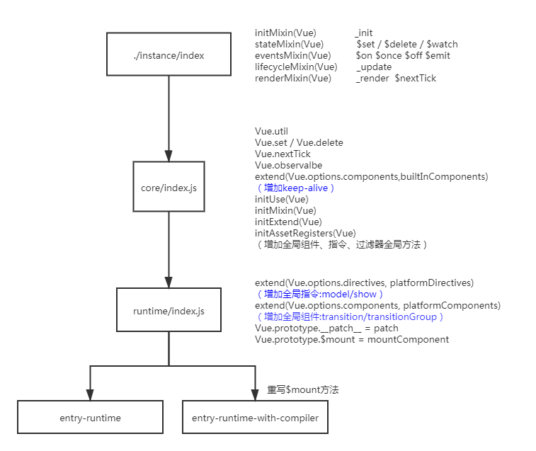

剖析源码Vue项目结构 (一)
一.掌握源码目录的结构
1.介绍Vue整个目录结构
- .circleci 持续集成
- benchmarks 性能评测
- dist 输出目录
- examples 案例
- flow flow声明文件
- packages vue中的包
- scripts 工程化
- src 源码目录
- test 测试相关
- types ts声明文件
2.介绍Vue源码的目录结构
为了直观的查看目录我们可以通过tree命令来查看src目录下的文件夹。先大概对源码的结构有一个大体的认识。
├─compiler # 编译的相关逻辑
│ ├─codegen
│ ├─directives
│ └─parser
├─core # vue核心代码
│ ├─components # vue中的内置组件 keep-alive
│ ├─global-api # vue中的全局api
│ ├─instance # vue中的核心逻辑
│ ├─observer # vue中的响应式原理
│ ├─util
│ └─vdom # vue中的虚拟dom模块
├─platforms # 平台代码
│ ├─web # web逻辑 - vue
│ │ ├─compiler
│ │ ├─runtime
│ │ ├─server
│ │ └─util
│ └─weex # weex逻辑 - app
│ ├─compiler
│ ├─runtime
│ └─util
├─server # 服务端渲染模块
├─sfc # 用于编译.vue文件
└─shared # 共享的方法和常量
2
3
4
5
6
7
8
9
10
11
12
13
14
15
16
17
18
19
20
21
22
23
24
到这里可能你只能看的懂文件夹的组成，还无法知道代码是如何运行的，so~ 你需要通过
package.json来查找代码是如何被打包的!
二.打包流程
"build": "node scripts/build.js",
"build:ssr": "npm run build -- web-runtime-cjs,web-server-renderer",
"build:weex": "npm run build -- weex",
2
3
核心是使用node执行
scripts/build.js,通过传递参数来实现不同的打包结果，这里的--代表后面的内容是参数。
build.js
既然是打包，那我们肯定要找到打包的入口点,所以这里的关键就是查找打包的入口!
// 1.获取不同的打包的配置
let builds = require('./config').getAllBuilds()
// 2.根据执行打包时的参数进行过滤
if (process.argv[2]) {
const filters = process.argv[2].split(',')
builds = builds.filter(b => {
return filters.some(f => b.output.file.indexOf(f) > -1 || b._name.indexOf(f) > -1)
})
} else {
// 默认不打包weex相关代码
builds = builds.filter(b => {
return b.output.file.indexOf('weex') === -1
})
}
// 3.进行打包
build(builds)
2
3
4
5
6
7
8
9
10
11
12
13
14
15
16
17
不同的打包配置指的是:
web/weex不同的平台这里我们不关注
weex,web指代的就是我们常用的vueRuntime only/Runtime + compiler是否带编译模块带有
compiler的会将模板转化成render函数CommonJS/es/umd打包出不同模块规范umd模块是整合了CommonJS和AMD两个模块定义规范的方法,当不支持时两种模块时会将其添加到全局变量中
打包入口
src/platforms/web/entry-runtime.js
src/platforms/web/entry-runtime-with-compiler.js
2
我们可以通过打包的配置找到我们需要的入口，这两个区别在于是否涵盖
compiler逻辑，我们在开发时一般使用的是entry-runtime,可以减小vue的体积，但是同样在开发时也不能再使用template,.vue文件中的template是通过vue-loader来进行编译的，和我们所说的compiler无关哈。
new Vue({
template:`<div></div>`
})
2
3
这样的template必须要使用带compiler的入口才能进行模板的解析
三.入口分析
这里为了剖析vue完整的代码,我们就来分析带有compiler的文件。
我们观察这两个入口的文件不难发现他们都引入了
runtime/index.js
entry-runtime-with-compiler.js
import Vue from './runtime/index' // 1.引入运行时代码
const mount = Vue.prototype.$mount; // 2.获取runtime中的$mount方法
Vue.prototype.$mount = function (el,hydrating) { // 3. 重写$mount方法
el = el && query(el)
const options = this.$options
if (!options.render) { // 4.没有render方法就进行编译操作
let template = options.template
if(template){ // 5.将模板编译成函数
const { render, staticRenderFns } = compileToFunctions(template, {
outputSourceRange: process.env.NODE_ENV !== 'production',
shouldDecodeNewlines,
shouldDecodeNewlinesForHref,
delimiters: options.delimiters,
comments: options.comments
}, this)
options.render = render // 6.将render函数放到options中
}
// todo...
}
return mount.call(this, el, hydrating) // 7.进行挂载操作
}
export default Vue
2
3
4
5
6
7
8
9
10
11
12
13
14
15
16
17
18
19
20
21
22
带有
compiler的文件仅仅是对$mount方法进行了重写,增添了将template变成render函数的功能
四.Vue的构造函数

instance/index.js真正的Vue的构造函数,并在Vue的原型上扩展方法core/index.js增加全局API方法runtime/index.js扩展$mount方法及平台对应的代码
到此为止我们就将文件关联起来了。下一步我们就开始来分析细节吧!